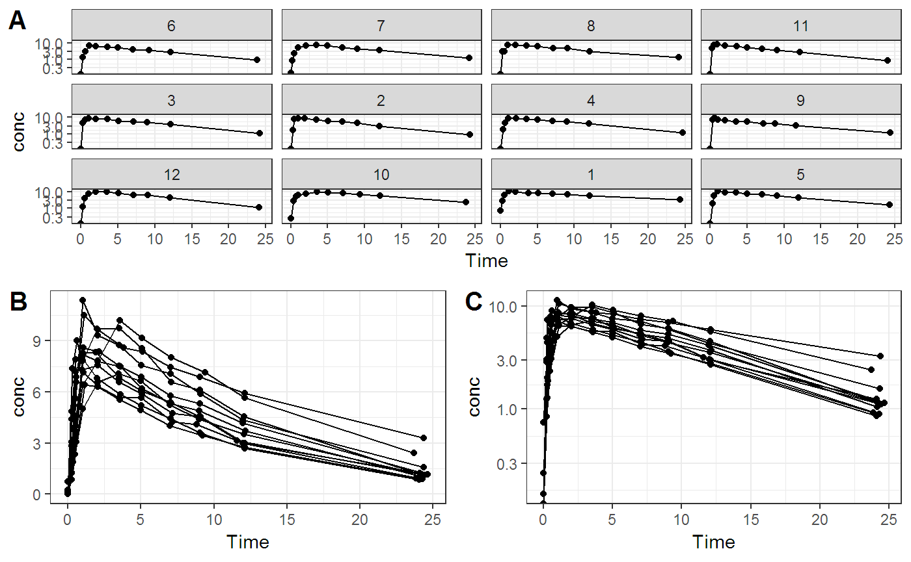
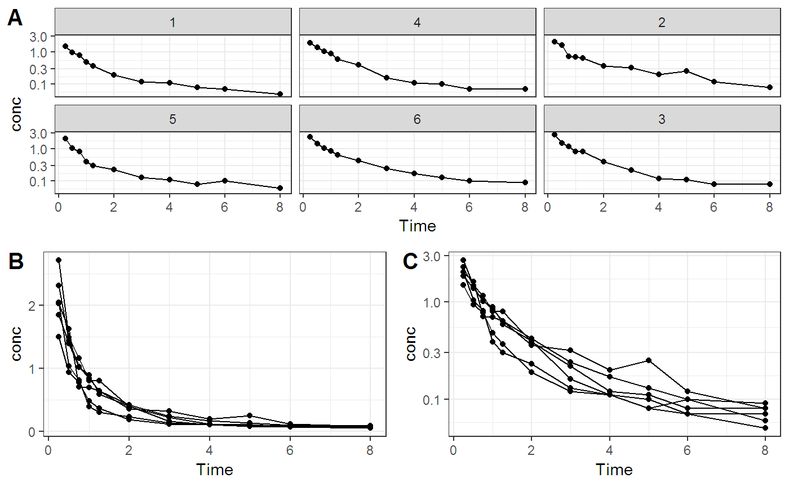
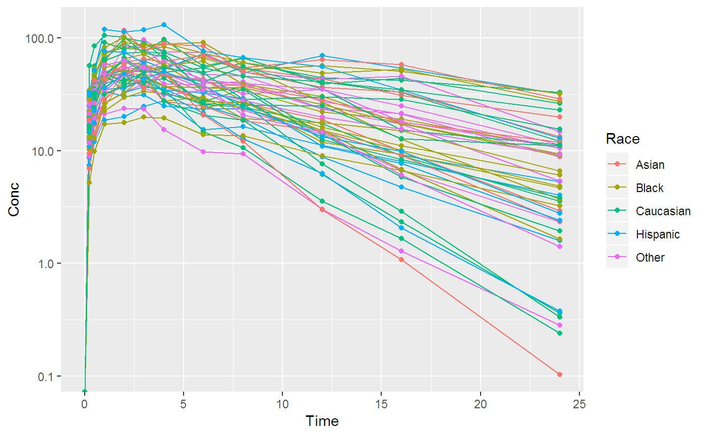
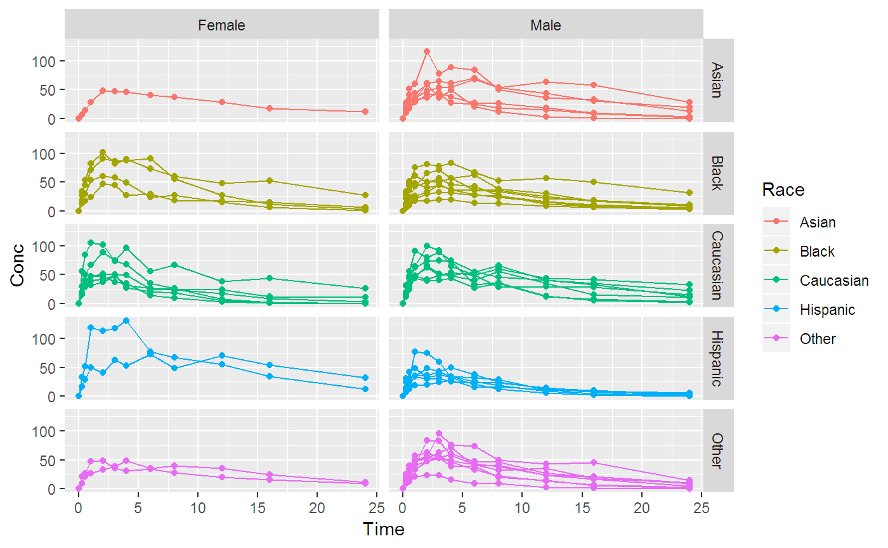

Installation can be done by running the script below.
Here are some examples.


Future references
여기서 예제를 올리고 이를 응용해서 PK plot을 그려 나갈 예정입니다.
ggplot2::qplot(x=Time, y=Conc, group=ID, color = Race,
data=PKPDdatasets::sd_oral_richpk,
log = 'y',
geom=c('line', 'point'))
ggplot2::qplot(x=Time, y=Conc, group=ID, color = Race,
data=PKPDdatasets::sd_oral_richpk,
facets = Race ~ Gender,
geom=c('line', 'point'))